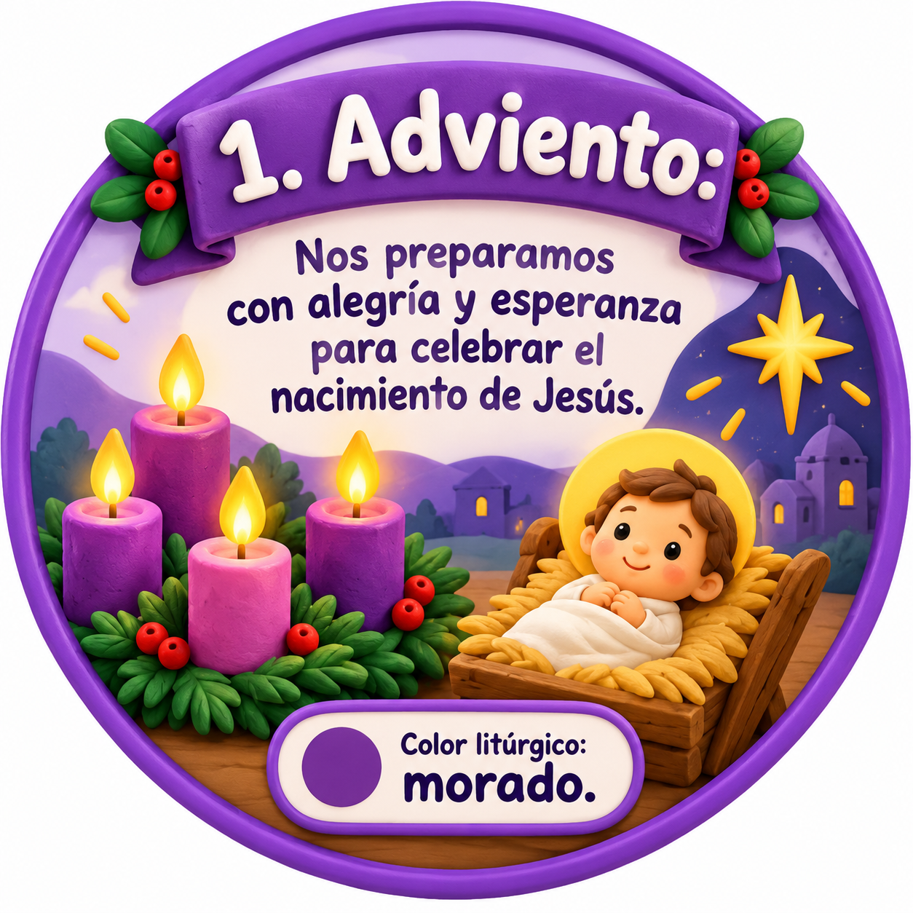
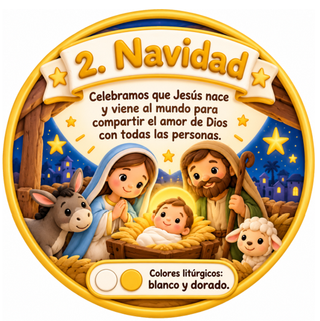
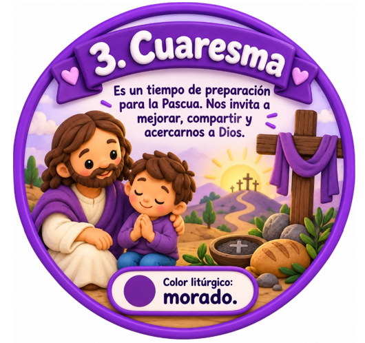
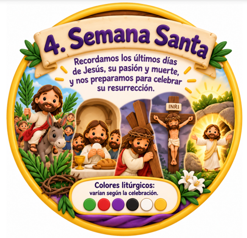
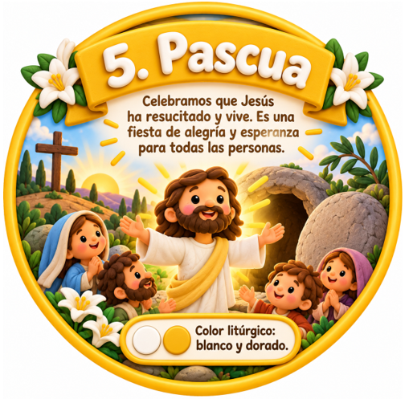
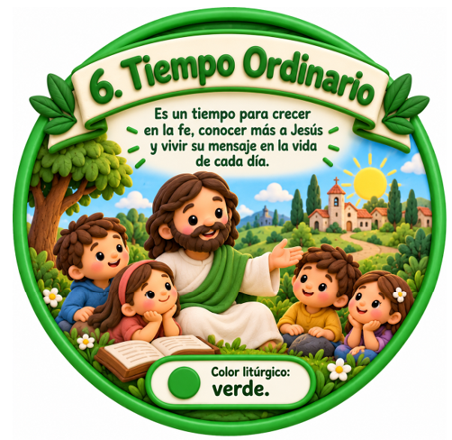

📄 Abrir material PDFUn año para vivir la fe
El Año Litúrgico organiza las celebraciones de la Iglesia. Cada tiempo nos ayuda a recordar, celebrar y comprender momentos importantes de la vida de Jesús.

📄 Abrir material PDF
📄 Abrir material PDF
📄 Abrir material PDF
📄 Abrir material PDF
📄 Abrir material PDF
📚 Seguimos aprendiendo
← Volver al Año Litúrgico
En cada apartado iremos incorporando fichas educativas, actividades y documentos PDF para Infantil y Primaria.